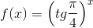
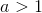
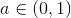
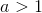
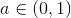
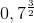
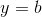

Funcția exponențială
Definiția FE32: Funcție exponențială
Se numește funcție exponențială, orice funcție de forma:
.
Exemple:
- Funcțiile sunt funcții exponențiale:
 cu
cu  .
.- , cu
- , cu

- Funcțiile
 nu sunt funcții exponențiale:
nu sunt funcții exponențiale:- , cu .
- , cu
 , dar .
, dar .
Reprezentăm grafic primele două funcții din exemplele de mai sus:
- cu .
Facem tabelul de valori:

Graficul funcției  este:
este:

- , cu
Tabelul de valori este următorul:

Graficul acestei funcții este reprezentată în figura de mai jos:

Observații:
- Pentru funcția oricare ar fi , avem punctul , unde
 reprezintă orice grafic a unei funcții exponențiale.
reprezintă orice grafic a unei funcții exponențiale. - Axa
 este asimptotă orizontală la graficul funcției exponențiale, deoarece graficul se apropie de axa , fără a o intersecta. Pentru a-ți aminti noțiunea de asimptote, te sfătuim să accesezi pagina Asimptote ale graficului unei funcții, din cadrul eBook-ului Ghid | Limite de funcții.
este asimptotă orizontală la graficul funcției exponențiale, deoarece graficul se apropie de axa , fără a o intersecta. Pentru a-ți aminti noțiunea de asimptote, te sfătuim să accesezi pagina Asimptote ale graficului unei funcții, din cadrul eBook-ului Ghid | Limite de funcții.
Proprietăți ale funcției exponențiale
Fie funcția  .
.
Propoziția FE33: Intersecția graficului funcției exponențiale cu axele de coordonate
Funcția intersectează axele de coordonate astfel:
- , axa este asimptotă orizontală pentru graficul funcției ;
 ; adică, graficul funcției , indiferent dacă  sau , intersectează axa într-un singur punct,
; adică, graficul funcției , indiferent dacă  sau , intersectează axa într-un singur punct,  .
.
A se vedea graficele din pagina anterioară.
Propoziția FE34: Monotonia funcției exponențiale
Avem următoarele cazuri, în funcție de natura numărului  :
:
- pentru , funcția este strict crescătoare pe mulțimea
 ;
; - pentru , funcția este strict descrescătoare pe mulțimea .
Exemple:
- Să se compare numerele  și .
Rezolvare:
Avem  , de unde obținem, conform Propoziției FE34, b., că funcția este o funcție descrescătoare.
, de unde obținem, conform Propoziției FE34, b., că funcția este o funcție descrescătoare.
Atunci, cum  , ne rezultă că , adică .
, ne rezultă că , adică .
- Să se rezolve inecuațiile:
 ;
;- .
Rezolvare:
- Avem , cu
 , de unde ne rezultă:
, de unde ne rezultă:
- Din , cu , ne rezultă că:

Propoziția FE35: Convexitatea funcției exponențiale
Funcția exponențială este convexă (adică funcția „ține apa”) pe mulțimea .
În graficele de mai jos, evidențiem atât monotonia, cât și convexitatea funcției exponențiale, în funcție de natura numărului .
În primul grafic putem observa că funcția este crescătoare și „ține apa”, adică este convexă.

În cel de-al doilea grafic se observă că funcția este descrescătoare și deasemenea, la fel ca cea de sus, este o funcție convexă.

Propoziția FE36: Bijectivitatea funcției exponențiale
Funcția exponențială este bijectivă pe mulțimea .
Demonstrație:
Fie funcția exponențială .
Pe graficele de mai sus, se observă că funcția exponențială este monotonă pe mulțimea , de unde ne rezultă că funcția exponențială este injectivă.
Dacă am trasa orice paralelă la axa , de forma , cu (din codomeniu), aceasta va intersecta graficul funcției cel puțin o dată, de unde ne rezultă că este o funcție surjectivă.
Fiind și injectivă și surjectivă, ne rezultă că funcția exponențială este o funcție bijectivă.
Observație:
Cum funcția exponențială este bijectivă, ne rezultă, conform Propoziției FE21: Condiția de inversabilitate, că aceasta este și o funcție inversabilă.
Inversa funcției exponențiale este funcția logaritmică, despre care vei afla mai multe în pagina următoare.